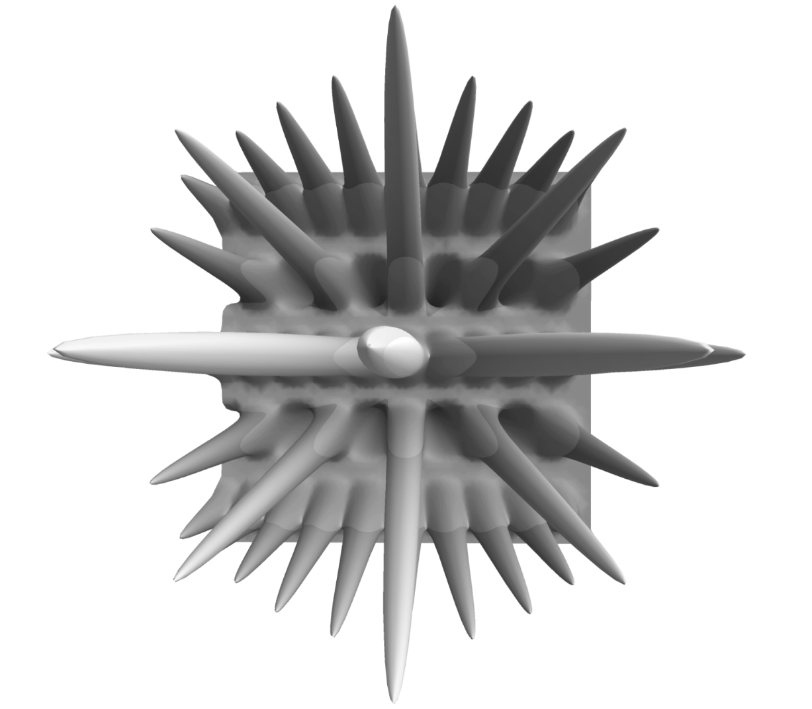

Home
About
Blog
Contact
Gottesman Kitaev Preskill - Surface codes

This topic was the subject of my master thesis. It is not published yet because we are in the process of writing a peer-reviewed article about it. Once it is, I will update this page with a post about the published results.